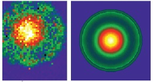

Overview of the MNPBEM Toolbox
In the following we briefly discuss the purpose as well as the implemented features of the toolbox.
Contents
Short overview
- Purpose. The main purpose of the toolbox is to provide a flexible simulation toolkit for the calculation of the electromagnetic properties of plasmonic nanoparticles. In principle, the toolbox works for arbitrary dielectric bodies with homogeneous dielectric properties, which are separated by abrupt interfaces. We have primarily used and tested the toolbox for metallic nanoparticles with diameters ranging from a few to a few hundred nanometers, and for frequencies in the optical and near-infrared regime.
- Implementation. The toolbox has been implemented with Matlab classes. These classes can be easily combined, which has the advantage that one can adapt the simulation programs flexibly to the user's needs. Our approach requires from the user some basic understanding of the working principle of the MNPBEM toolbox. This is what will be given in the user guide.
- Simulation scheme. The toolbox provides a number of routines for discretizing the boundaries of the dielectric particles, as will be discussed below. Once one has specified the dielectric properties of the particles, together with a few additional informations, one can solve Maxwell's equations using a boundary element method (BEM) approach. Different solution schemes exist based on either the quasistatic approximation or the full Maxwell equations.
- Examples. A number of demo programs are collected in the example section.
Features of the toolbox
- Plane wave excitation. We have implemented plane wave excitation of dielectric nanoparticles, together with the calculation of the corresponding scattering and extinction cross sections.
- Dipole excitation. We also provide excitation of oscillating dipoles, together with a calculation of the resulting total and radiative scattering rates for the dipole. With such excitations, it is also possible to compute the photonic local density of states (LDOS) and dyadic Green functions.
- Layer structure. Plane wave and dipole excitations have been implemented for layer structures and substrates.
- EELS simulation. We additionally provide classes for the simulation of electron energy loss spectroscopy (EELS) and cathodoluminescence of plasmonic nanoparticles.
- Iterative solvers and H-matrices. The latest version of the toolbox now also includes iterative solvers and H-matrices for the simulation of large nanoparticles (consisting of a few 10 000 boundary elements).
- Nonlocality We provide a simple model accounting for nonlocal dielectric functions. Following the approach of Pendry and coworkers, nonlocality within the hydrodynamic model is modeled throgh a thin, artificial cover layer with local dielectric properties.
Literature

Details about our MNPBEM toolbox have been published in
- U. Hohenester and A. Trügler, Comp. Phys. Commun. 183, 370 (2012).
- U. Hohenester, Comp. Phys. Commun. 185, 1177 (2014).
- J. Waxenegger, A. Trügler, and U. Hohenester, Comp. Phys. Commun. 193, 138 (2015).
In the last couple of years the toolbox has been extensively used by us and other groups for the simulation of plasmonic nanoparticles. The 2012 paper has currently been cited about 140 times and the latest version of the toolbox has been downloaded from our MNPBEM website more than 1000 times.
Toolbox history
- MNPBEM11 was the first release, which was described in U. Hohenester and A. Trügler, Comp. Phys. Commun. 183, 370 (2012).
- MNPBEM13 was the second release, which was described in U. Hohenester, Comp. Phys. Commun. 185, 1177 (2014). In comparison to MNPBEM11 this second release includes EELS excitations and mirror symmetry, and corrects a number of small errors and inconsistencies.
- MNPBEM14 was the third release, which was described in J. Waxenegger et al., Comp. Phys. Commun. 193, 138 (2015). It introduced simulations of nanoparticles situated in stratified media, as well as a more flexible user interface (one common options structure, improved Green function evaluation, improved plot functionality, etc.).
- MNPBEM17 is the latest release which introduces hierarchical matrices (in short H-matrices) and iterative solvers for the simulation of larger nanoparticles consisting of a few 1000 to several 10000 boundary elements. We also introduce a simple simulation approach for nonlocal dielectric functions, following a proposal of Pendry and coworkers.
Copyright 2017 Ulrich Hohenester